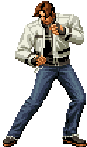
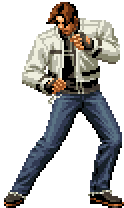

Historia
Golpes
Curiosidades
KOF 94
Kyo representa o Japão ao lado de Benimaru e Goro Daimon. Ele descobre o torneio KOF e aceita participar para testar suas habilidades. No final, enfrentam o chefe Rugal Bernstein. Kyo se destaca ao derrotar o vilão, chamando atenção mundial como um prodígio.
KOF 95
O time do Japão é convidado para outro torneio KOF, agora com o misterioso Rugal retornando. Kyo descobre o clã Orochi por trás das ameaças e enfrenta Iori Yagami, seu rival. A rivalidade entre os Kusanagi e os Yagami é revelada. Kyo vence Rugal novamente, que morre ao tentar absorver poder demais.
KOF 96
Kyo continua a competir, agora investigando o crescente poder de Orochi. Enfrenta Goenitz, um dos Quatro Reis Celestiais. Goenitz derrota vários lutadores com facilidade, mas é vencido por Kyo com a ajuda de Iori e Chizuru. Essa união dos três herdeiros sagrados inicia a resistência contra Orochi.
KOF 97
Kyo se junta a Iori e Chizuru oficialmente para selar Orochi. Eles enfrentam a New Faces Team, que se revela como servos de Orochi. Após batalhas intensas, Orochi desperta usando o corpo de Yashiro. Kyo, com ajuda de Iori, consegue selar Orochi novamente, mas o esforço é imenso.
KOF 98
Esse torneio é um especial sem continuidade oficial. Todos os personagens aparecem apenas por diversão. Kyo participa com sua versão clássica e também com novos golpes. A história não avança nesse título.
KOF 99
Kyo é sequestrado pela NESTS, uma organização que clona seus poderes. K aparece como o novo protagonista com habilidades baseadas em Kyo. Kyo escapa do cativeiro, mas se esconde enquanto observa os planos da NESTS. Ele retorna no final para enfrentar Krizalid, o vilão.
KOF 2000
Kyo ainda age nos bastidores, caçando a NESTS. Apesar de não estar no time oficial, ele é selecionável e continua sua missão secreta. Vários clones seus ainda aparecem em ação. A NESTS começa a ruir por dentro.
KOF 2001
Kyo retorna oficialmente como parte do time Japan. Ajuda na luta contra os últimos planos da NESTS. Enfrenta K9999 e Igniz, o líder final da organização. Após a queda da NESTS, Kyo volta a viver mais tranquilamente.
KOF 2002
Mais um torneio comemorativo sem continuidade oficial. Kyo participa com diversas versões, incluindo a clássica. Não há história principal, mas ele é um dos personagens mais populares.
KOF 2003
Agora com sistema de times de 3, Kyo não faz parte do time principal do enredo. Ash Crimson entra como novo protagonista. Kyo participa do torneio, mas não está diretamente envolvido na trama de Mukai e do novo clã que ameaça os herdeiros sagrados.
KOF XI
Kyo volta a ser mais ativo, tentando proteger o selo de Orochi. Percebe que Ash Crimson é uma ameaça, pois rouba os poderes de Chizuru. A trama se intensifica, e Kyo se prepara para possíveis confrontos futuros. A tensão entre os herdeiros sagrados aumenta.
KOF XIII
Kyo enfrenta Ash, que já roubou os poderes de Iori e Chizuru. O clã Orochi tenta retornar mais uma vez. Ash desaparece após o clímax da batalha, e a ameaça é selada. Kyo retoma sua posição como um dos maiores heróis da série.
KOF XIV
Uma nova organização misteriosa organiza o torneio. Kyo participa novamente com o time clássico do Japão. Ele investiga os novos lutadores e o fenômeno que ameaça o mundo. Enfrenta Verse, uma entidade ligada a almas perdidas.
KOF XV
Kyo retorna com o time Japan para enfrentar a ameaça de Re:Verse e Otoma=Raga. Reforça sua rivalidade com Iori e seu papel como herdeiro Kusanagi. Apesar de novas ameaças, continua protegendo o equilíbrio entre os poderes antigos. Sua chama continua essencial para o mundo.